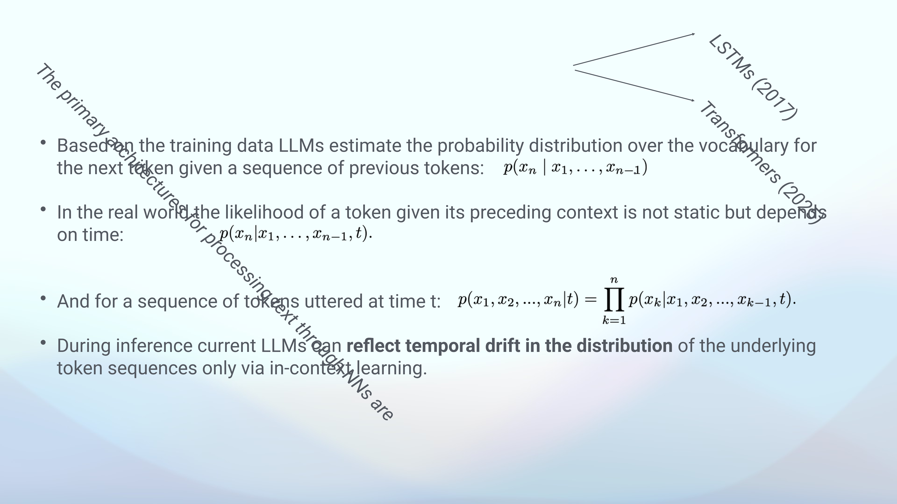
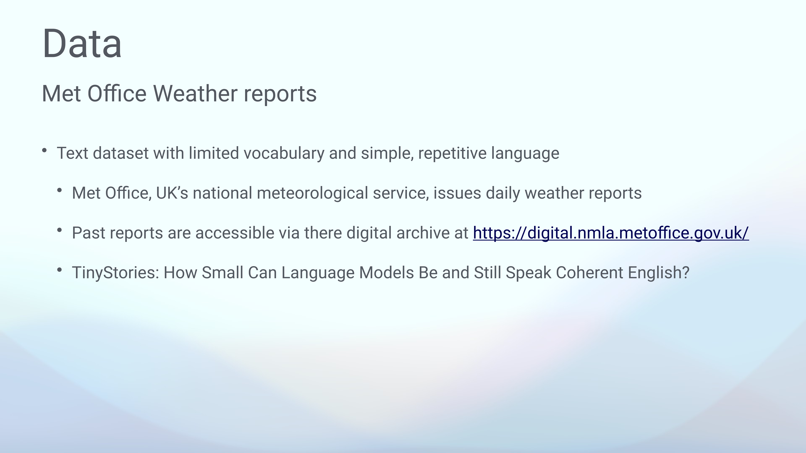
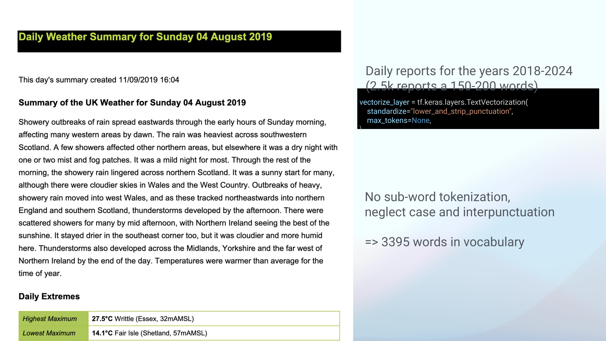
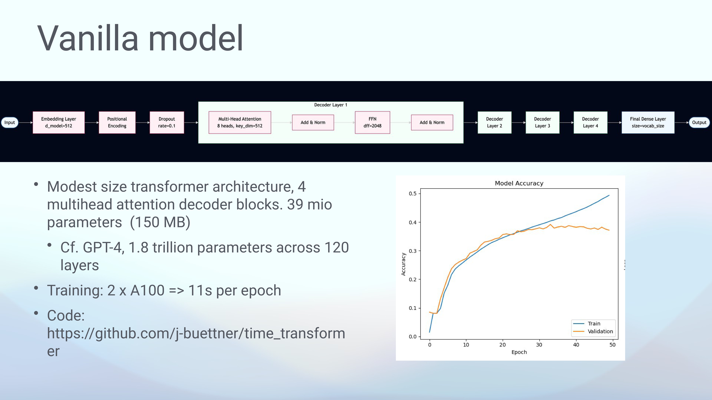
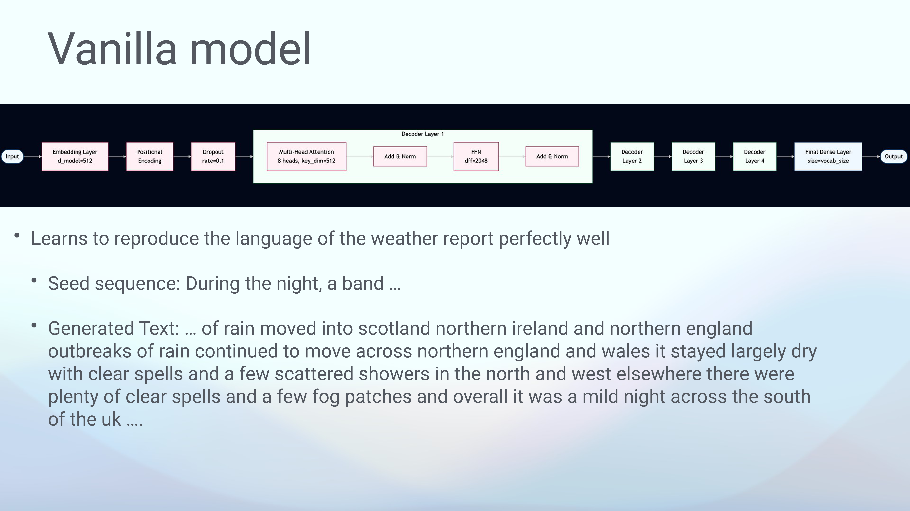
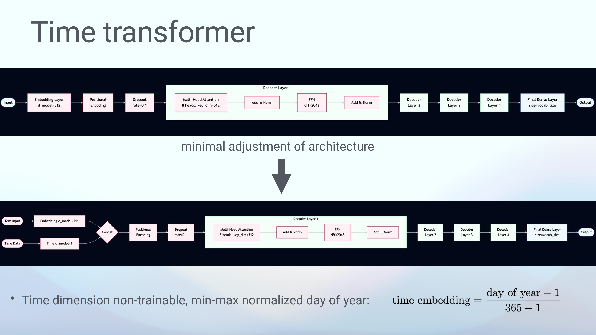
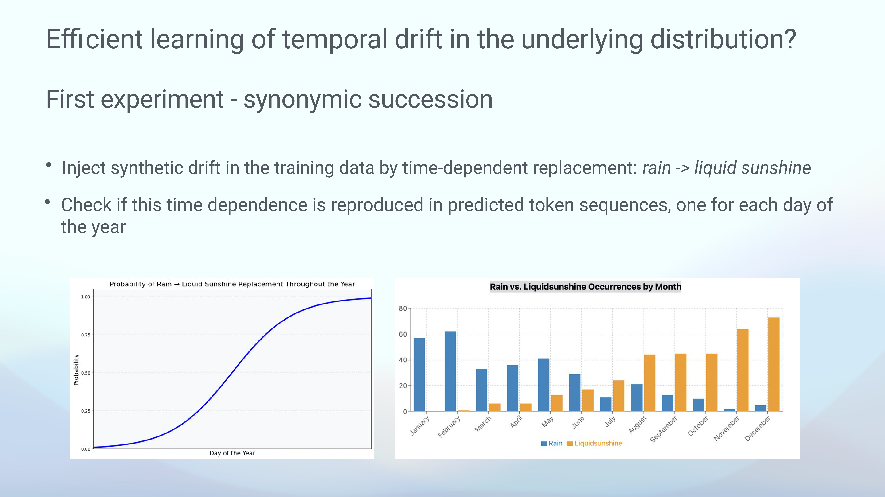
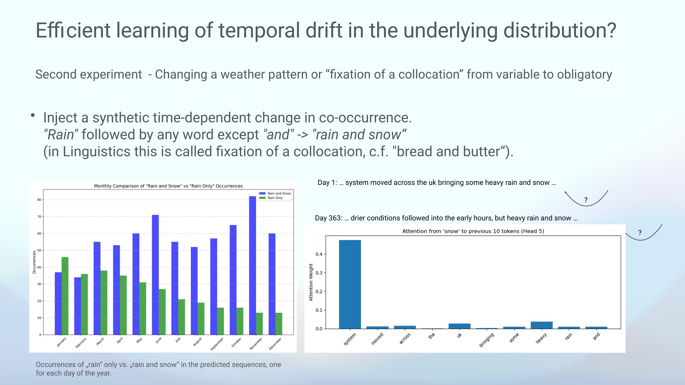
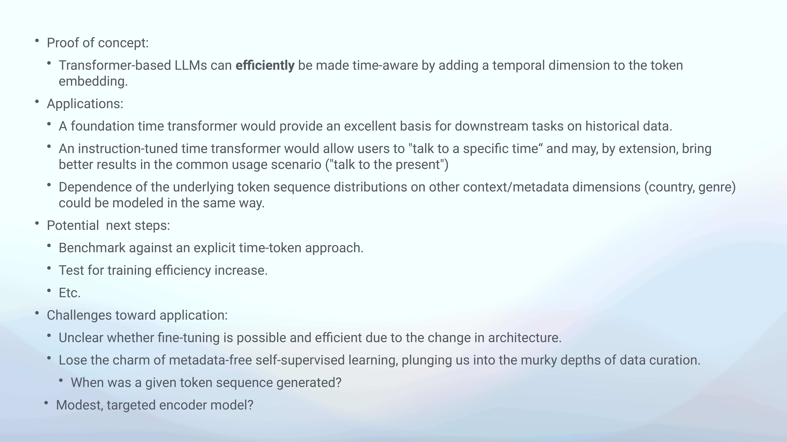

15 Making Transformer-Based LLMs Time-Aware: A Proof of Concept
Overview
This chapter details a novel approach for integrating explicit time awareness into Transformer-based Large Language Models (LLMs). The authors identify a core limitation in current models: they possess only an implicit, statistical understanding of time derived from their training data. This deficiency leads to an inability to resolve time-dependent contradictory information and contributes to a pronounced recency bias.
To address this, the team proposes the Time Transformer, an architecture that incorporates an explicit temporal dimension directly into the token embedding space. This minimal adjustment allows the model to learn the influence of time on language patterns without altering the fundamental training objective of maximising log likelihood.
A proof of concept was developed using a small, decoder-only Transformer model built from scratch, featuring 39 million parameters. For training, the authors curated a specialised dataset of UK Met Office daily weather reports from 2018 to 2024, selected for its restricted vocabulary and repetitive linguistic structures.
Two experiments involving synthetically injected temporal drift demonstrated the model’s efficacy. The first involved a ‘synonymic succession’ where one word was progressively replaced by another over a year, a pattern the model successfully learned and reproduced. The second, a more complex ‘collocation fixation’, altered word co-occurrence probabilities over time, which the model also learned, as verified by analysing its internal attention mechanisms.
Whilst the proof of concept is successful, the authors acknowledge significant challenges for broader application. These include the necessity of training new models from scratch and the extensive data curation required to assign accurate timestamps to all training sequences.
15.1 The Problem of Implicit Time

Current Large Language Models derive their understanding of time statistically, extracting implicit cues from vast training corpora. Whilst remarkably capable, this approach has inherent limitations. Models cannot easily resolve information that is contradictory without temporal context; for example, two statements identifying different dominant neural network architectures are both valid, but at different points in time. During training, these sentences compete directly for attention, forcing the model into a state where it cannot perfectly fulfil its objective because validating one statement necessitates penalising the other.
Consequently, during inference, these models often exhibit a recency bias, favouring the most recently prevalent information. An input sequence about neural architectures will likely elicit the completion ‘Transformers’, even though ‘long short-term memories’ (LSTMs) is also present within its learned knowledge. To retrieve this older information, users must resort to prompt engineering—adjusting the input by adding a year or changing a verb’s tense. This process is imprecise and unreliable, as it depends on exploiting how the model has happened to learn temporal cues.
A more robust solution requires models that are explicitly time-aware, capable of learning and reproducing evolving patterns as a direct function of time. To this end, the authors have developed a proof of concept that achieves this for generative language models.
15.2 Formalising Temporal Dependence

To formalise the problem, it is necessary to consider the core function of a language model. Based on its training data, an LLM learns to estimate the probability distribution over its entire vocabulary for the next token, given a preceding sequence of tokens. It then outputs the most probable continuation.
A critical factor, however, is that these probabilities are not static in the real world; they are inherently a function of time. For instance, the probability of the token ‘Transformers’ completing a specific sentence about neural architectures was effectively zero in 2017.
Despite this reality, the training process typically treats the probability distributions for token sequences as static. This simplification means that when the model is later used for inference, it can only reflect the temporal drift in language patterns via in-context learning. The model’s ability to generate time-appropriate text is therefore contingent on the specific cues provided in the immediate prompt, rather than on a fundamental, built-in understanding of temporal dynamics.
15.3 The Time Transformer Architecture

To model time-dependent probability distributions effectively, the authors propose a new architecture, the Time Transformer, as a more efficient alternative to data-intensive methods like time-slicing. The core idea is elegant in its simplicity. Every natural language processing task begins by converting tokens into a vectorial representation, or embedding, within a latent space that is learned during training. The Time Transformer augments this process by adding a single, additional dimension to the embedding that explicitly encodes the token’s time of utterance.
In this model, every token in an input sequence is assigned a specific time value, meaning its vector representation will differ slightly based on when it was recorded. When these time-aware embeddings are processed by the Transformer, the resulting output probability distributions for subsequent tokens are inherently time-dependent.
Crucially, the training objective remains the standard maximisation of log likelihood. The beauty of this approach lies in the Transformer’s innate ability to process statistical relationships; it learns precisely how much influence the temporal dimension should have on each token, allowing some words to remain stable over time whilst others change significantly.
15.4 Dataset Curation and Pre-processing

To test the Time Transformer concept, the authors required a dataset with a restricted language and a small vocabulary, which would allow a modest model to learn its linguistic patterns. They identified UK Met Office daily weather reports as an ideal candidate. These reports, available online as monthly PDFs from the UK’s national meteorological service, feature highly repetitive language. As a potential alternative, the TinyStories dataset was also noted.
The team scraped all daily reports from 2018 to 2024, creating a corpus of roughly 2,500 documents. The text was then chunked and tokenised using Keras TextVectorization. A simple pre-processing scheme was employed, which ignored case and punctuation and did not use subword tokenisation. This straightforward approach was sufficient for the simple language of the reports, which, across seven years of data, comprised a vocabulary of only 3,400 words.
15.5 Baseline Model and Training

Before implementing the temporal component, the authors constructed a baseline ‘vanilla’ Transformer from scratch to confirm that a small model could learn the language patterns of the weather report dataset. This modest, decoder-only model features four decoder layers. Each layer is composed of a multi-head attention block with eight heads, followed by a normalisation layer, a non-linear feed-forward layer, and a final normalisation layer. A concluding dense layer performs the classification task of assigning probabilities across the vocabulary.
The resulting model is very small by modern standards, with only 39 million parameters and a file size of 150 MB. It was trained on an HPC cluster in Munich using two A100 GPUs, with each training epoch completing in just 11 seconds. After training, the model demonstrated its ability to autoregressively generate coherent and realistic weather reports from a simple seed phrase, proving it had successfully captured the linguistic patterns of the source data. The code for this model and the subsequent experiments is publicly available.
15.6 Implementing the Time Transformer

Adapting the baseline model into the Time Transformer requires a remarkably minimal architectural change. The implementation reserves just one dimension within the model’s 512-dimensional latent semantic space to carry temporal information. For this proof of concept, every token is assigned a non-trainable, min-max normalised value corresponding to the day of the year on which its source report was published.
This specific encoding—the day of the year—was deliberately chosen to exploit the seasonal variations naturally present in the weather data, such as the higher frequency of ‘snow’ in winter and ‘hot’ in summer. This design choice enables the model to directly associate linguistic patterns with cyclical time. Nevertheless, the framework is flexible, and any other form of time embedding could be integrated as needed.
15.7 Experiment One: Synonymic Succession

The first experiment sought to determine if the new architecture could efficiently learn a temporal drift injected into its training data. The authors designed a ‘synonymic succession’ by systematically replacing the word ‘rain’ with ‘liquid sunshine’. This replacement was governed by a sigmoid function tied to the day of the year, where the probability of replacement was zero at the beginning of the year and gradually increased to one by the end.
After training on this modified dataset, the model was tasked with generating one weather prediction for every day of the year. By counting the monthly frequencies of ‘rain’ and ‘liquid sunshine’ in the output, the team confirmed the experiment’s success. The generated text, with some expected statistical variation, faithfully reproduced the engineered pattern: ‘rain’ appeared almost exclusively in the early months, ‘liquid sunshine’ dominated the later months, and the transition occurred precisely in the middle of the year.
15.8 Experiment Two: Collocation Fixation

Seeking a more complex challenge than simple word replacement, a second experiment was designed to test if the model could learn a change in word co-occurrence. This ‘collocation fixation’ synthetically altered the weather language over the course of the year. Specifically, instances of the word ‘rain’ not already followed by ‘and’ were replaced with the phrase ‘rain and snow’, with the probability of this replacement increasing throughout the year. From the model’s perspective, this changes the language such that by the year’s end, the appearance of ‘snow’ becomes almost entirely conditioned on the preceding token being ‘rain’.
Once again, the model successfully learned the injected pattern. Generated forecasts for the end of the year almost always featured ‘rain and snow’ together, whereas forecasts for the beginning of the year showed more varied patterns. Deeper analysis into the model’s internals provided further proof. The authors found that specific attention heads had specialised to detect this relationship, paying significantly more attention to the token ‘rain’ late in the year when deciding whether to generate ‘snow’.
15.9 Conclusions and Future Challenges

The research successfully demonstrates as a proof of concept that Transformer-based LLMs can be made explicitly time-aware. This is achieved simply by adding a temporal dimension to the initial token embeddings. Whilst this opens up fascinating application possibilities, several potential next steps and significant challenges remain. One promising avenue for future work is to investigate whether the explicit time signal could actually make training more efficient, as it provides a clear signal for patterns the model would otherwise have to decipher from implicit clues.
However, major hurdles exist for widespread application. Firstly, because this is a novel architecture, one cannot simply fine-tune an existing pre-trained model; it requires training from scratch, a computationally prohibitive task for large-scale models. Secondly, the approach sacrifices the simplicity of metadata-free learning. It necessitates a rigorous data curation process to assign an accurate date to every text sequence, a complex and often ambiguous task, especially for historians.
As a final thought, a more practical application might be to use this principle not for a full generative model, but to build a targeted, BERT-like embedder for specific, time-sensitive analytical tasks.